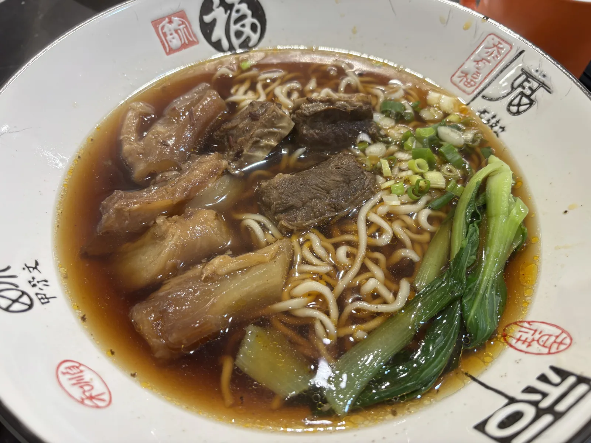
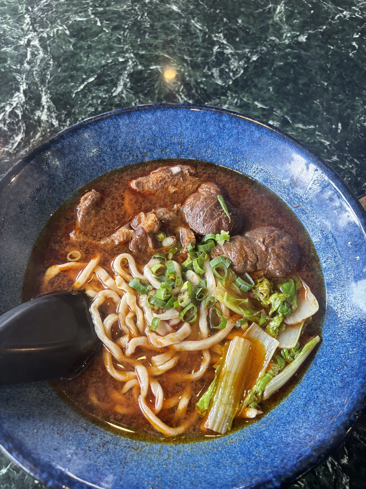
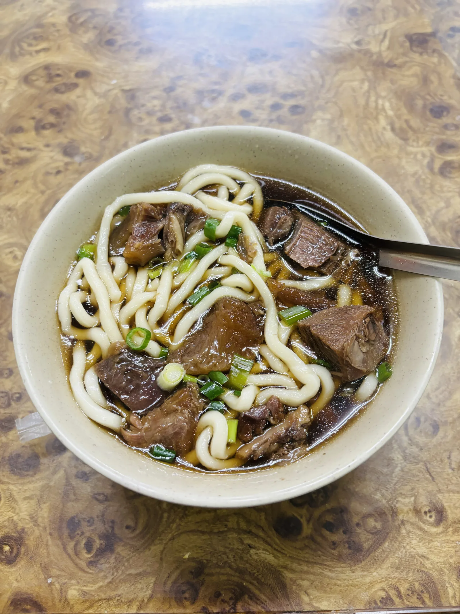

대만 사람도 결국 한 그릇으로 돌아오는,
타이베이 우육면 순례
국물 한 숟갈에 팔각과 두반장 향이 확 올라오는 홍샤오 우육면. 어디서 왔고, 왜 대만인의 소울푸드가 됐는지부터 — 여행자들이 실제로 다녀와 남긴 타이베이 우육면집 6곳까지 한 번에 정리했어요.
우육면(牛肉麵)은 이름만 보면 대륙 어딘가에서 건너온 음식 같지만, 지금 대만 어디서나 만나는 진한 홍샤오(紅燒) 우육면은 대만 땅에서 완성된 요리예요. 대만 사람들 스스로도 "가장 대만다운 대륙 음식"이라고 부르는 이유가 여기 있어요.
01 · 우육면, 사실은 대만에서 태어난 맛

참고로 국물은 크게 두 갈래예요. 간장·두반장·팔각·계피로 진하게 끓여 색이 붉고 살짝 매콤한 홍샤오(紅燒), 그리고 향신료 없이 맑게 고아낸 칭둔(清燉). 대만에서 그냥 "우육면 먹으러 가자"고 하면 열에 아홉은 홍샤오를 뜻해요.
02 · 대만 사람들은 왜 우육면에 진심일까
대만 어디를 가나 우육면집이 있고, 다들 "우리 동네 우육면이 제일"이라는 나름의 기준이 있어요. 그 이유를 뜯어보면 크게 두 가지로 정리돼요.
이민자들이 만든 '진짜' 국민음식
특정 지역 고유의 향토음식이 아니라 여러 성(省) 출신이 뒤섞이며 대만 땅에서 새로 태어난 요리라, 특정 지역을 대표하기보다 대만 전체를 대표하는 음식으로 여겨져요.
한 그릇에 걸린 자존심
육수를 몇 시간 우렸는지, 두반장 배합이 어떤지로 가게마다 승부를 봐요. 국제우육면절에서 매년 순위를 가릴 만큼, 대만인에게 우육면은 여전히 경쟁하고 발전시킬 가치가 있는 요리예요.
"우육면 한 그릇이면 아침이든 밤 11시든 다 통한다." — 대만에서는 시간을 가리지 않고 먹는 몇 안 되는 메인 요리예요.
03 · 타이베이에서 다녀온 사람들이 남긴 우육면 6곳
아래는 '나만 알고 싶은 대만 맛집' 지도에 여행자들이 직접 등록한 타이베이 우육면집이에요. 화려한 순위표가 아니라, 실제로 먹어본 사람들의 한 줄 후기를 그대로 모았어요.
다녀온 여행자들이 입을 모아 "여기도 맛 괜찮습니다", "우육면과 같이 먹으니 좋았어요"라고 남겼어요. 근처 다른 맛집과 묶어 코스로 들르기 좋은 곳으로 언급돼요.
구글맵에서 위치 보기 →여행자 후기는 짧고 굵게 "맛있다고 강력 추천". 무슬림 여행자를 위한 할랄 인증 우육면집이 흔치 않은 만큼, 일행 중 할랄 식단이 필요한 분이 있다면 특히 기억해둘 만해요.
구글맵에서 위치 보기 →현지 매운맛을 즐긴다면 참고할 팁 하나 — "빨간 소스 넣으면 얼큰해서 더 맛있음". 테이블에 놓인 라유·고추기름을 취향껏 더해 국물 맛을 직접 조절해볼 수 있어요.
구글맵에서 위치 보기 →완화(용산사) 쪽에서 우육면이 당길 때 들를 만한 곳으로 지도에 새로 등록됐어요. 아직 한 줄 후기가 쌓이지 않았으니, 다녀오셨다면 지도에 첫 리뷰를 남겨주세요.
구글맵에서 위치 보기 →역시 최근에 새로 등록된 곳이라 아직 후기는 없어요. 완화 지역 우육면 옵션을 늘려두고 싶다면 체크해두기 좋아요.
구글맵에서 위치 보기 →
04 · 주문 전에 알아두면 좋은 것들
홍샤오 vs 칭둔 처음이라면 무조건 홍샤오(紅燒)로 시작하세요. 진하고 살짝 매콤한 국물이 대만 우육면의 기본값이에요.
牛肉麵 vs 牛肉湯麵, 헷갈리면 안 돼요 牛肉麵(뉴러우몐)은 고기가 들어간 우육면이고, 牛肉湯麵(뉴러우탕몐)은 고기 없이 국물과 면만 나오는 메뉴예요. 소고기를 기대하고 시켰다가 국물만 받는 일이 없도록 메뉴판의 한자를 꼭 확인하세요.
매운맛은 셀프 국물 자체는 맵기보다 향신료 향이 강한 편이라, 테이블에 있는 고추기름을 조금씩 더해가며 내 입맛대로 맞추는 게 정석이에요.
지도에서 우육면 맛집 더 보기
타이베이 전체 우육면 스팟과 실시간 후기를 지도에서 바로 확인해보세요.